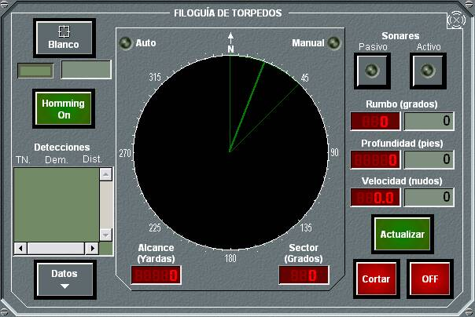

El panel de detalle general de torpedos presenta algunas diferencias dependiendo de que la unidad sea de superficie, submarina o aérea. A continuación se muestra cada uno de ellos.
Torpedos en Unidades de Superficie
En este panel de detalle de Torpedos se muestra una lista de todos los tubos instalados en la unidad (nótese que los tubos pares corresponden a la banda de babor y los impares a estribor), del tipo de torpedo que carga cada tubo, en el caso de que no esté vacío y el número de torpedos disponibles en el pañol de cada tipo. También se muestra una lista de los torpedos ASROC disponibles y la cantidad de cada uno de ellos.
Los indicadores tipo led que aparecen entre cada tubo y el botón Alistar indican el estado en el que está el tubo. Los tres leds miniatura que están al otro lado del tubo indican el tipo de torpedo de los tres disponibles con el que está cargado el tubo (gris descargado, amarillo cargando o descargando, verde cargado). El led junto a los tipos de torpedos ASROC muestra el estado del sistema de lanzamiento asociado.
Desde este panel pueden ejecutarse las siguientes acciones:
- Cargar un torpedo en un tubo: Cuando un tubo está vacío, puede cargarse un torpedo en él eligiendo el tipo de torpedo del pañol, utilizando la barra de desplazamiento correspondiente y pulsando el botón Cargar / Descargar que presenta el número del tubo. En el interior del tubo se mostrará el tiempo que resta para que finalice el proceso de carga.
- Descargar un torpedo de un tubo. Cuando un tubo contiene un torpedo, puede descargarse y guardarse en el pañol, pulsando el botón Cargar / Descargar que presenta el número del tubo.
- Lanzar un torpedo: Pulsando en el botón Alistar se abre el panel de lanzamiento de torpedos del tubo correspondiente. Este panel varía en función de que el torpedo sea normal o ASROC.
Torpedos en Unidades Submarinas
Este panel es similar al de unidades de superficie, salvo en que los tubos se montan a proa o a popa en lugar de en las bandas, en que dispone de dos pañoles independientes a proa y a popa y en que no existen torpedos ASROC.
Torpedos en Unidades Aéreas
En este panel de detalle de torpedos para unidades aéreas solamente se muestra la lista de tipos de torpedos disponibles, su estado y la cantidad de cada uno de ellos.
Desde cualquiera de estos paneles, al pulsar el botón Alistar se abrirá el panel de Lanzamiento de Torpedo, que será diferente dependiendo de que el torpedo seleccionado sea normal o ASROC, y que tendrá algunas opciones deshabilitadas en el caso de lanzamiento desde submarinos o unidades aéreas.
Lanzamiento de Torpedo
En este panel de lanzamiento de torpedos se muestra (derecha) el nombre del torpedo y la situación y el número del tubo. Mientras esté abierto este panel, se indicará gráficamente en la Pantalla Táctica la dirección de lanzamiento del torpedo, mediante una línea que tiene origen en la unidad propia y ángulo igual a la suma del ángulo del tubo más el ángulo de giróscopo seleccionado.
Desde este panel se pueden realizar las siguientes acciones:
- Designar un blanco para lanzamiento: Al pulsar el botón Blanco se designará al contacto en hook como blanco para el lanzamiento. En los campos Rumbo, Velocidad y Distancia aparecerán los datos del blanco seleccionado. En el caso de que no haya ningún contacto asociado al Hook, al pulsar este botón no se ejecutará acción alguna.
- Designar una demora fija para lanzamiento: Al pulsar el botón Demora se designará una demora para el lanzamiento.
Nota: Para lanzamientos automáticos desde unidades aéreas, el operador deberá introducir también la distancia de anticipación al blanco en el lanzamiento, es decir, la carrera que debe efectuar el torpedo antes de impactar con el blanco.
- Consultar recomendaciones de disparo: Si el tipo de carrera del torpedo es RECTILÍNEA, SERPENTEO, COMBINADO o HATS, en los campos TLA y Rumbo Recomendado aparecen las recomendaciones de ángulo de adelanto (TLA) y de rumbo a navegar recomendado para realizar el lanzamiento. También puede introducirse manualmente un TLA y se puede dar orden a la unidad propia para que siga la recomendación de rumbo. Esta orden se ejecuta de forma que la unidad cambia su rumbo al recomendado en el instante en que se pulsa el botón Seguir Indicadores, sin tener en cuenta los cambios al rumbo recomendado que puedan ocurrir una vez pulsado dicho botón.
- Seleccionar el tipo de carrera: Si el tipo de carrera del torpedo seleccionado es HATS o COMBINADO, se podrá elegir lanzarlo con ese tipo de carrera o con carrera circular. El tipo de carrera cambiará cada vez que se pulse el botón cuya etiqueta muestra el tipo de carrera al que cambiará (Circular en la figura). Si el torpedo tiene capacidad para realizar carreras helicoidales, y tiene un ángulo de ascenso / descenso definido en preparación, optará por este tipo de carrera al seleccionar circular.
- Seleccionar el ángulo de giróscopo del torpedo: Utilizando la barra de desplazamiento correspondiente se puede modificar el ángulo de giróscopo entre los valores máximo y mínimo del torpedo. El valor seleccionado se muestra también de forma numérica. Esta opción sólo se encuentra habilitada si el tipo de carrera seleccionada para el lanzamiento no es Circular.
- Seleccionar la profundidad de búsqueda, utilizando la barra de desplazamiento correspondiente, donde se seleccionan los diferentes valores de SD definidos para el torpedo (preparación).
- Seleccionar la profundidad inferior (Floor), utilizando la barra de desplazamiento correspondiente, donde se seleccionan los diferentes valores de Floor definidos para el torpedo (preparación).
- Realizar el lanzamiento: Pulsando el botón Fuego se produce el lanzamiento del torpedo con los parámetros que se hayan seleccionado. Esta acción no está disponible durante el proceso de filoguía de otro torpedo.
- Si el lanzamiento es desde unidad aérea, se podrá además activar el lanzamiento en modo automático del torpedo. Para activar un lanzamiento en modo automático, previamente el operador debe tener designado un blanco o una demora y distancia fijos para lanzamiento. Una vez realizada una de las dos acciones anteriores, al pulsar Activar, la unidad lanzadora realiza una interceptación a punto fijo o blanco y una maniobra de Cambio de Altura a una nueva altura que permita el lanzamiento. Una vez que la unidad alcance una posición adecuada para el lanzamiento, se efectuará automáticamente un lanzamiento del torpedo.
Lanzamiento de ASROC
Desde este panel de lanzamiento de torpedos ASROC se pueden realizar las siguientes acciones:
Filoguía de Torpedos

Una vez que se ha lanzado un torpedo filoguiado, desde la ventana de detalle de Torpedos podrá abrirse este panel para realizar la filoguía del torpedo lanzado. Desde este panel de filoguía de torpedos se pueden realizar las siguientes acciones:
- Activar filoguía Automática: seleccionando el Blanco y activando Homming On.
- Realizar filoguía Manual, desactivando Homming On. Los valores para la filoguía manual (rumbo, profundidad y velocidad del torpedo) pueden ser seleccionados por el operador, introduciendo los valores deseados y pulsando Actualizar. El rumbo del torpedo se puede modificar también gráficamente sobre el PPI o con los cursores y pulsando Actualizar.
- Seleccionar activación de sonar pasivo o activo del torpedo. Una vez que esté encendido el sonar del torpedo, se muestran sus detecciones. Se podrán consultar los datos de estas detecciones sonar pulsando Datos, con lo que se mostrara el diálogo de detalle de la detección (ver Manual de Alumno – Sensores – Sonar)
- Cortar la guía del torpedo seguirá en búsqueda sin control del operador.
- Poner a OFF el torpedo, con lo cual se cortará la guía y el torpedo se irá al fondo del mar sin explotar.